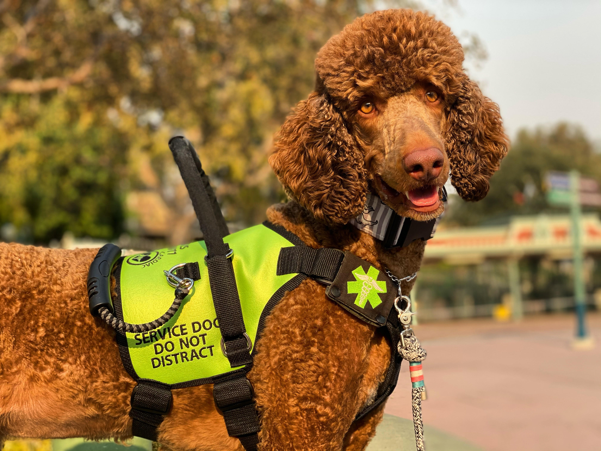

All About Service Dogs
Best Breeds
Service Dogs in Ontario
Is a Service Dog Right For You?
What is a service dog?
A service dog is a specially trained canine that assists individuals with disabilities. These dogs perform specific tasks to help their handlers manage their conditions, which can include physical, sensory, psychiatric, or intellectual disabilities. Common examples of service dog tasks include guiding individuals who are visually impaired, alerting those with hearing impairments, providing support for mobility challenges, and offering comfort to people with anxiety or PTSD. Service dogs are trained to be highly focused and well-behaved in public, and they are protected under laws that allow them to accompany their handlers in various settings, including restaurants and stores.
Service Dogs and the Law
- Definition: A service dog is defined as a dog trained to perform tasks for individuals with disabilities, which may include physical, sensory, or mental health conditions.
- Public Access: Service dogs are allowed in all public places, including restaurants, stores, and public transportation. This is to ensure that individuals with disabilities can access services and participate fully in their communities.
- Identification: While service dogs are not required to wear a specific vest or carry identification, they are trained to behave appropriately in public, and staff can ask whether the dog is a service animal and what tasks it performs.
- Accommodations: Organizations are required to accommodate individuals accompanied by service dogs and cannot impose additional fees or restrictions based on the presence of the dog.
- Compliance: Businesses and public services must comply with AODA standards, which include training staff on the rights of individuals with disabilities and the role of service dogs.
Overall, the AODA helps ensure that individuals with disabilities can use service dogs to enhance their independence and quality of life.

Photo Credit to: Dysautinomia International